The confidence intervals for the effects are
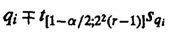
The t–value is read at 22(r – 1) degrees of freedom (which is the degrees of freedom associated with the experimental errors). Any effect whose confidence interval does not include a zero is significant. Some books on experimental design use an F-test (see Section 20.5) to determine the significance of effects. However, the F-test conclusions for a 2kr design are always identical to those obtained using confidence intervals.
Example 18.4 Continuing the memory-cache study from Example 18.3, the standard deviation of errors is
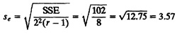
and the standard deviation of effects is
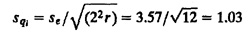
The t-value at eight degrees of freedom and 90% confidence is 1.86.
The confidence intervals for the parameters are 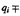 (1.86)(1.03) = 1.92, that is, (39.08, 42.91), (19.58, 23.41), (7.58, 11.41), (3.08, 6.91) for q0, qA, qB, qAB, respectively. Since none of the intervals include a zero, all effects are significantly different from zero at this confidence level.
It is also possible to compute variance and confidence intervals for any contrast of effects. A contrast is any linear combination whose coefficients add up to zero. The variance of 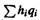, where 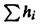 = 0, is

The 100(1 – α)% confidence interval for can be computed using the t[1 – α/2;22r] value from Table A.4 in the Appendix. This procedure for computing confidence intervals for linear combinations of effects can be used to compute confidence intervals for estimated response at any given factor levels.
Example 18.5 In the memory-cache study, the confidence interval for u = qA + qB – 2qAB is computed as follows.
Notice that u is a contrast with coefficients of 0, 1, 1, and –2. The mean of u is
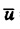 = 21.5 + 9.5 – 2 × 5 = 11
The variance of u is:
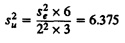
The standard deviation of u is
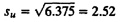
Since t[0.95;8] from Table A.4 in the Appendix is 1.86, the confidence interval for u is
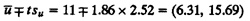
18.6 CONFIDENCE INTERVALS FOR PREDICTED RESPONSES
It is also possible to compute confidence intervals for response y at a given combination of factors.
The mean response 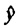 can be easily computed for any given factor combination:
= q0 + qAxA + qBxB + qABxAxB
Suppose we want to predict the mean of responses obtained from m repetitions of the experiment at the given factor combinations. The expression for the mean estimate is the same as above regardless of m. However, as m increases, the sample mean is expected to be closer to the predicted mean. In other words, the standard deviation of the estimate is a decreasing function of m. It can be shown to be
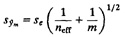
Here, neff is the effective number of degrees of freedom (DFs), which is given by
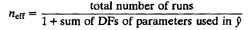
In a 22r design, the total number of runs is 22r. The parameters q0, qA, qB, and qAB are used in estimating . Each of these parameters has one degree of freedom. Therefore,
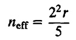
A 100(1 – α)% confidence interval for the mean response is given by
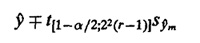
The t-value is read at the degrees of freedom associated with the error.
Two special cases are of particular interest. First, if we want to predict the response for a single run (m = 1) of a confirmation experiment in the future, the standard error expression would be
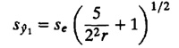
Second, if we want to predict the population mean (m = ∞), the standard error expression would be
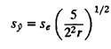
Example 18.6 For the memory-cache study, let us compute the confidence intervals for mean response with xA = –1 and xB = –1. Four different confidence intervals can be computed:
- 1. Predicted Mean Response for a Future Confirmation Experiment: The estimated mean response 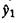 is
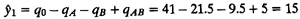
The standard deviation of the predicted observation is computed as follows:

Using t[0.95;8] = 1.86, the 90% confidence interval is
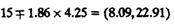
- 2. Predicted Mean Response for Five Confirmation Experiments in Future: In this case, the standard deviation of the predicted mean is
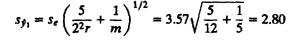
The 90% confidence interval is
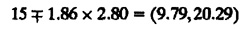
- 3. Predicted Mean Response for a Large Number of Experiments in Future: In this case, the standard deviation of the predicted mean is
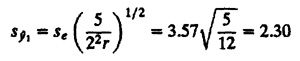
The 90% confidence interval is
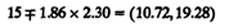
- 4. Current Mean Response: This is not a case of predicting the results of future experiments. Here we simply want to get a confidence interval for 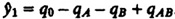. This is a contrast of the effects. Using the formula for contrasts, we compute the standard deviation of 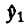 as follows:
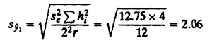
The 90% confidence interval for the current mean response is
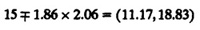
Notice that the confidence intervals become narrower as we scan down the preceding list. The predictions always have a wider confidence or higher variance because the effect of errors in future experiments has to be added. As the number of future experiments increases, the confidence interval becomes narrower. Current mean response has an even narrower confidence interval.
18.7 VISUAL TESTS FOR VERIFYING THE ASSUMPTIONS
In deriving the expressions for effects, we made essentially the same assumptions as in regression analysis, namely:
- 1. The model errors are statistically independent.
- 2. The model errors are additive.
- 3. The errors are normally distributed.
- 4. The errors have a constant standard deviation σe.
- 5. The effects of factors are additive.
These assumptions lead to the observations being independent and normally distributed with constant variance.